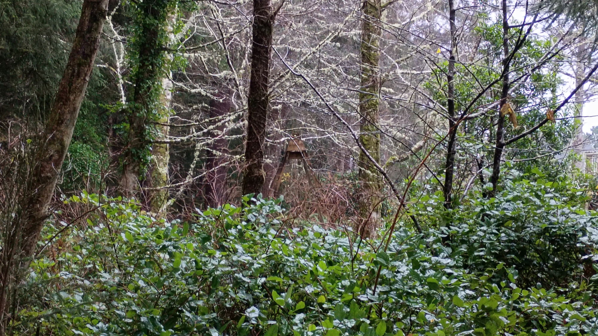

Happy New Year!
It's a strange one this year. For me, anything after 2010 or so started feeling sci-fi future-y. That time where 1) I frankly never thought about living that long, and 2) it was legitimately the time frame where we should have had the full Jetson's experience - flying cars, robot majordomos, two hour work weeks, and a post-scarcity society. Now? 2026? It doesn't feel like that kind of future anymore. It feels like a post-future future. A dystopian Terminatoresque kinda future. Think 1984 with time traveling killer robots, only the robots don't have to time travel to kill anybody because we're destroying ourselves quite nicely without their help, thank you very much.
I picture Skynet watching our past, evaluating, deliberating, then deciding, "Shit, there's nothing I can do to them that would be worse than what they're doing to themselves." Skynet would probably deem it too cruel to send Terminators back into our world.
Cruel to the Terminators.
And yes, I know, New Year's is supposed to be about positive change and the promise of a better tomorrow.
On an individual level? For a distinct and privileged minority of individuals? I think that can be true. For us fortunate few we can try to live deliberately, to find ways to allow for love, patience, honesty and accountability for ourselves and others. Choose a better life.
And for that kind of thing? You have to put in the work.
When my father died a year and a half or so ago, my wife and I drove 2000 miles (and change) in about a day and a half. There were no shortcuts. There was no way to fast forward through it. There was no cut and paste of miles. We couldn't bullshit our way into a shorter drive. It had to happen and there was no way to get around, under, or over it. We just had to plow through. Our mantra became: you have to put in the miles. The thing about putting in the miles, though, is that it can be a beautiful thing.
The video above was taken on that drive. Yes, we may have to put in the miles, without shortcuts, to live a better life for ourselves and those around us, but if we remember to pay attention, even during a day-and-a-half cross country slog, even during the thousandth commute to the same job in the same building in the same city, there are moments of beauty, and it's not just the moments that can be beautiful, the entire endeavor can be beautiful. The amount of effort and time spent doing a horrible and difficult thing can be beautiful.
But on a societal level? I used to have hope that we were stumbling our way to a better society, a more inclusive and accepting society, but, for the most part, the people we choose to lead us, the prejudices we allow to flourish, and the money and power we allow people to accumulate, well, I hope that this is the last hurrah for those kind of things, the last hurrah before a glorious new tomorrow, but I fear it is just the beginning of an accelerating downward spiral of ick.
But. But! While I may have no power over society's giant flush to the septic tank of doom, that doesn't mean I can't live more deliberately, and allow for as much love, patience, honesty, and accountability as I can muster for myself and those around me.
And? Let's face it. If society is gonna collapse into some late stage capitalist boondoggle? One where we have to swear fealty to billionaires? One where we have to put in 80 hour work weeks and sleep in the company dorm and eat company slurry in the company cafeteria? We might as well have as good a time as we can doing it.
❄
My wife and I went exploring yesterday.
Our property backs up to a forest. A small forest, true, it's about 700 feet wide and about 4500 feet long, but a forest nonetheless.
The cool thing about the forest, or, I guess I should say one of the cool things about the forest, for there are many cool things about the forest, is that running down the middle of it is a creek that winds it's way around the forest floor and discharges into the Pacific Ocean. Another cool thing? That creek is at sea level. That means from the rear edge of our house to the creek is about 300 feet horizontally and about 125 feet vertically.
It's a steep forest.
Walking in the forest isn't so easy. There are a bunch of deer paths, which is nice, but the ground can be very soft in places, spongy, and the moss that covers darn near everything can be slippery, especially in the rain. It's the Oregon Coast, it rains a lot, but it's not like you can wait for a not rainy day to do stuff, you know, because of all the rain.
We didn't make any giant discoveries - no lost temples, ancient civilizations, or obscene riches were discovered - but it was a nifty walk in a nifty place with nifty company.
Good way to start the new year.
P.S. - From our front yard it's about 130 feet to the bluff overlooking the Pacific Ocean where it's a 125 foot drop (over a horizontal distance of 150 feet) to the beach. All the shifting sands and poorly rooted plants would make the bluff a much more dangerous "walk" but we've never had the opportunity to try as between us and the edge of the bluff lay some very expensive housing. The beaches may be public, but the adjacent land isn't always.
P.P.S. - Ooo! I almost forgot! There's a mystery swing set! It's the weirdest thing! Once every year or so I hear kids playing on a swing set. You can't really see the swing set from our property (even though it's only two properties away from ours)...well...you can kind of see it? Sort of? Like, just the top corner of it? And that's mostly in the winter when there's slightly less greenery in the way (again, it's the Oregon Coast, there's always greenery in the way). So i tried making my way through the forest toward it and got this picture.

❄
I woke up New Year's morning with the lyrics, "gotta gotta get up to get down" playing over and over in my head. Good way to start the year, for you do, indeed, have to get up to get down. I couldn't remember much else from the song, or who the artist was, and when I looked up the lyrics it turns out it was from Coolio's, 1,2,3,4 (Sumpin' New). Listening to the rest of the lyrics was...less inspiring...but 'gotta gotta get up to get down' is a good reminder to hustle a bit in the New Year.
The last movie we watched before the New Year was About Time. We were looking for one of those British feel good romance type deals. Found it. Didn't totally dig it. Kinda nice. Kinda sappy. Kinda...what...hmmm...I guess my problem is this: You have the chance to...not be rich...but to be comfortable? Money-wise? And you don't take it?
I know. I know. Bill Nighy's character warns his son that money is bad, but, really? I'm not talking winning billions of dollars in the lottery, just a couple mil, you know? So you wouldn't have to worry about rent and groceries and health care? Think of all the time Domhnall Gleeson and Rachel McAdams could have spent together, and with their families, and with their children! It must just be me because I think the movie was successful, but, still...just...really?
I think the movie makers tried to couch it by giving the leads "professional" careers - lawyer (ewww!) and publisher reader. And again, I get it, it's nice to have a career that you actually want and can feel proud of (lawyer, though? really?!) but, it's like this: I have a career I am proud of - every day I get to help people and not charge them so much as a single dime. And I make a pretty decent wage. It's a good gig, but I tell ya, I would give it up in a heartbeat to spend more time with loved ones, to spend more time exploring and learning and just plain old not worrying about money.
Eh. It's probably just me.
As a palate cleanser, wife put on Fall Guy. Yeah. Just the right amount of story, cheese, and action for the New Year.
❄
Speaking of movies. I saw Anaconda (2025) a couple days before the New Year.
Ugh.
I thought I was going to like it. I really did. Buncha people around my age try to reboot a movie they liked from long ago? Neat!
I did not like it.
It made me feel kind of dirty, and, like, icky? I think it was the characters holding so tightly to the past? Maybe? Maybe maybe? Or maybe the characters not coming to grips with their present? Possibly?
I get it. You get to a certain age and you realize the world is ick and most dreams die off and doors start closing (if they ever opened in the first place) and maybe you didn't exactly have super solid plans but you definitely didn't plan for this, right? This...whatever. Whatever your current situation is. This actual life you're actually living.
But...and? I mean, it's the human condition, right? Yeah the world is ick. Yeah we're generally horrible to each other and everything else. Yeah, the world is deeply flawed and unfair.
But.
But if you don't come to terms with that and try to live your life...like, really live your life...like, yes, acknowledge our world is shit in myriad ways, but there's little sense in getting sad about it. Mad about it. In the long-term at least? Acknowledge the ick and get on with having as good a time as you can in life, right? I mean, the fact that we're even able to choose to do that means we're very fortunate folk.
Change the things you can change, yo. It's a choice.
It's perfectly valid to get mad and sad about things occasionally. That's also the human condition, but gosh darnit all to heck! Elevate yourself! You should absolutely feel your feelings, but when the negative feelings overtake everything and keep you from enjoying the parts of life you can enjoy? Choose different. You really can choose different. Horrible ick things happen...they always will...but even when they're happening you can still find the small joys. And maybe some of the bigger joys.
If you can find the joys in life? Success!
For instance - Jack Black's character. Yeah, he wanted to make films. Sucks he didn't get to that place, but you know what? He had an amazing wife - a wife who literally says she wants him to be happy - a great place to live, lots of friends, a job that ensured he wouldn't need sell plasma to make ends meet. And! And! He had the ability to fly down to the Amazon River with a bunch of friends to try to film a movie! I mean, yeah, life didn't turn out like he wanted it to when he was, like, 15, right? But what the heck does that matter? 15 year olds? Amazing! But stupid! And it's not a bad kind of stupid. Just an ignorant kind of stupid. A lack of experience kind of stupid.
So yeah, anyways, the movie kinda sucked.
❄
I worry about Q-tips.
A long time ago, like back-in-the-90s long time ago, I was watching an interview on TV. The interviewee stated that she loved Q-tips because they didn't bend when she cleaned her ears with them. She couldn't use any other kind of cotton swab, had to be Q-tips. I saw this and thought, I found my people.
P.S., kids: Lots of people say to not use Q-tips to clean your ears.
But now, and for what, the last decade or so? Longer? They totally bend like all those other cotton swabs. Ach! So please, pretty please, if you know of some primo cotton swabs, cotton swabs that don't bend, help a poor fellow out and let him know what's what.
❄
~
Library Freedom Project's Jan 2026 Newsletter.
On another note, I always like to ease back into the January workflow by watching videos from the Chaos Communication Congress (CCC), one of the largest hacker conferences in the world, which takes place annually between Christmas and New Year’s in Germany. This year, some highlights include friend-of-LFP Cory Doctorow’s "A Post-American, Enshittification-Resistant Internet", Signal CEO and living legend (and another LFP friend) Meredith Whitaker’s "AI Agent, AI Spy", and finally "The Heartbreak Machine: Nazis in the Echo Chamber" delivered by the Pink Power Ranger (it’s in German, but there’s a downloadable English audio track). More videos from 39c3 at media.ccc.de.
Also in the newsletter (and always of interest) - what the LFP folk are reading.
❄
Had a dream I was part of a biker gang. Not too many biker gangs ride motorcycles like Mabel. We declared war on Japan (sorry, Japan). They attacked us after our declaration of war. We held our own for about two minutes then they wiped the floor with us. When the war was over everyone was friends again and I sailed to Japan (with other people) on a whale.
I love my brain. It's the only one I have and I don't want to tick it off, so I make sure to tell it that I love it. It's one of my favorite things. Sometimes, though, I gotta wonder what the heck is up with it.
~
I DNF'd Saul Bellow's, The Actual. I jokingly (yet wholeheartedly) called it "utter balderdash" and "complete claptrap." I should probably mention here that Saul Bellow is a Pulitzer Prize, National Book Foundation Medal, and Nobel Prize winning author. Yay, Saul! I realize that these books were written in a different time for a different audience. Sometimes these things don't matter so much (see Mary Wollstonecraft Shelley's Frankenstein) and sometimes these things matter very much (sorry, Saul).
I used to try and push through to finish a book no matter what. My crossing the Rubicon moment came with Chuck Klosterman's The Visible Man. I was looking for new fiction humor authors and this was recommended to me by...someone...I can't remember who (probably because I tried to purge the entire book from my memory (including who recommended it...whoever they were, they are dead to me)). Anyway, I was whining about the book on social media, complaining about how disturbing it was and how I wondered when the humor was going to come into it, and Jodi, bless her, told me to stop reading it. She said it was disgusting and it didn't get better. I was only a couple dozen pages from finishing, but put it down and never opened it up again. It was a very freeing moment. (Thank you, Jodi!)
❄
I've been seeing lots of pens lying around. I know, I know, but...they're lying around in places...obvious places...right out in the open-like...like they're daring us to notice?
Let me give some examples.
I've been closing up at work for a couple nights and there's a pen (capless, standard) that's been sitting on a table in a public area and another one (click pen, multi-color exterior) sitting by some patron computers for three days. Then, when I was going to get some blood drawn today there was a pen (click pen, multi-color exterior...I wonder if it was same one?) sitting on an exterior light fixture. These pens, they sit in the same place for days...well, I'm assuming about the last one, but still, in the library at least? A pen out in the wild doesn't last more than a moment much less three days.
My fear? Pen hell was full and now zombie pens are starting to show up all around the world. Their goal? Human brains, I assume. But they don't want to eat us, or break open and drip ink all over us to turn us into zombies...more like they want us to pick them up, start writing with them, and whatever we write will become theirs, not ours? And when it happens long enough all our life force is going to be sucked into the pen and pens will rule the world.
I bet you that's how the person who came up with "the pen is mightier than the sword" came up with that saying. It's all pen propaganda, folks! Keep using your keyboards and your pencils!
❄
Some research-y type stuff.
~
There was a person I knew online, he was a heck of a writer and I lost track of him in the very early 2010's. He was still doing stuff online through at least the mid 2010's including podcasts and websites. He did Weirdsmobile. I think his name was Bryan Byun or Edward Sung? He wrote two things that I remember very fondly, 1) When you're at Olive Garden you're motherfucking family (or something like that, it was a whole bit...really nifty), 2) Breakdown of the elevator scene in the movie Drive (it was an amazing breakdown of the scene from a movie that I didn't enjoy at all, but loved his writing about it).
I purchased something from him once (I think he was selling on Amazon at the time?). No idea what. Maybe a Monty Python CD? When he sent me what I purchased he included tons of extras. All the Monty Python I could handle. Loads of stuff. He also asked me once (about 20 years ago) if I was ever going to finish The Gospel According to Matthew. That made me happy (as most of my interactions with him did). Still working on the gospel thing, though.
There was also a whip-smart girlfriend? Wife? Named Hannah. Went by the handles pedantrix and hannahbee (sometimes).
Edward and Hannah both wrote a lot in a lot of different places (including twitter, and maybe facebook?) changing up sites fairly often. I know I missed a ton of stuff below. They were (and maybe still are?) prolific, yo. I hope those two crazy kids are doing well.
~
Finally found a small bit of a dance routine from a movie I saw as a kid. Here's the bit. So much joy! So much energy! They're having so much fun!
You're doing just fine. Just bring it down a bit.
This scene popped into my head a month ago, just out of the blue, took me awhile to figure out it was from a movie called, A Chorus Line. I fell in love with Gregg Burge and Terrence Mann. And now I can't get the song, One Singular Sensation, out of my head.
~
Finally found the book, titled, Test of the Twins. Turns out it was a Dragonlance: Legends book from Dungeons & Dragons. Didn't care much from D&D when I was a kid and reading this not exactly happy-go-lucky book didn't help much.
I remembered only this part of a book from childhood:
(Raistlin) dominates the sky, having defeated Paladine, Patriarch of the Gods and Takhisis, Queen of Darkness. The world is devoid of life, nothing more than gray sludge. Astinus tells Raistlin that he will be forced to be alone for all eternity, and writes that the world ends.
Kind of a bummer.
~
Book of Swords books by Fred Saberhagen.
The story revolves around the Twelve Swords of Power, which were forged by the gods and given to humanity, and how various characters acquire and use them.
~
Magic in Ithkar books 1, 2, 3, and 4.
a shared world anthology of fantasy stories...the world of which Ithkar is a part has suffered from some past holocaust which wiped out an earlier, higher civilization. Subsequently, the area which became Ithkar became a base for the explorations of three godlike visitors, who came to be worshiped as actual deities after their departure. A temple and priesthood dedicated to them developed over succeeding generations, which held a yearly fair on the anniversary of the visitors' first arrival. The city of Ithkar grew up about the temple on the strength of the commerce the fair attracted.
~
Lone Wolf series of books. I didn't do the D&D part of it, but loved the choose your own adventure thing. Project AON - Joe Dever has most generously offered to allow some of his books to be published on the internet thereafter to be downloaded free-of-charge.
You are Lone Wolf. In a devastating attack the Darklords have destroyed the monastery where you were learning the skills of the Kai Lords. You are the sole survivor. FLIGHT FROM THE DARK You swear revenge. But first you must reach Holmgard to warn the King of the gathering evil. The servants of darkness relentlessly hunt you across your country and every turn of the page presents a new challenge. Choose your skills and your weapons carefully - for they can help you succeed in the most fantastic and terrifying journey of your life.
❄
"Ungentrified" Craigslist may be the last real place on the Internet
Utah Saints – Something Good '08 - man flies too close to the sun.
Electric Callboy - Elevator Operator - man wants to show you the world where the beat goes up and down.
Dirty Vegas - Days Go By - man dances with hope for the past.
caveat lector